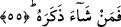
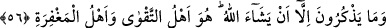
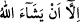
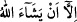

Buna göre âyetin mânâsı o Kur’an yeterli ve güzel, fasih bir öğüttür.
Burhanü’l-Kuran’da belirtildiğine göre; o Kur’an hakkı hatırlatan bir “tezkir”dir. Bu
kelimenin seçilmeyip yerine “tezkire” getirilmesi âyet sonlarındaki ses uyumunun
sağlanması içindir.
55. Dileyen ondan (düşünüp) öğüt alır.
“Artık” kabre girmeden önce Kur’an’dan öğüt almayı “dileyen ondan öğüt alır.”
Yâni Kur’an’ı gözünün önüne diker. Onun sebebiyle dünya ve âhiret mutluluğunu elde
eder. Çünkü o her iki mutluluğu sağlayacak bir kitaptır.
56. Bununla beraber, Allah dilemeksizin onlar öğüt alamazlar. Sakınılmaya lâyık
olan O’dur, mağfiret sâhibi de O’dur.
“Ama onlar ancak Allah dilerse öğüt alırlar.” Zikri sırf istemekle öğüt almazlar.
Nitekim yukarda geçen “artık dileyen ondan öğüt alır” âyetinin zâhirinden anlaşıldığı
üzere sırf dilemeleriyle öğüt almazlar. Çünkü kulun fiillerinde kendisinin dilemesinin
ve irâdesinin hiçbir etkisi yoktur.
Öğüt alma fiilinin “yezkurûne” şeklinde çoğul getirilmesi, ya “kâfirler”in
kasdedilmesinden dolayıdır; ya da mânânın genelliği göz önüne alınmıştır. “Kâfirler”
kasdedilmiş olabilir; çünkü ifâde kâfirleri konu almaktadır. Anlamın genelliği de göz
önüne alınmış olabilir çünkü ifâdenin bütün mükellefleri kapsaması kasdedilmiş
olabilir.
“ yâni Allah dilemedikçe ifâdesine gelince; bu, yukarda geçen sebep ya da
hâllerden istisnâ-i müferrağdır. Bu tahlilden hareketle şöyle söylenebilir: Onlar
Allah’ın dilemesi hâli hâriç, hiçbir sebeble ya da hiç bir hâlükarda öğüt almazlar. Bu
âyet-i kerîme kulun fiillerinin kendi irâdesi ile değil, sırf Allah’ın dilemesiyle
gerçekleştirdiğini açık bir şekilde hükme bağlamaktadır.
Aynu’l-maânî’de şöyle denir: “ âyet-i kerîmesi kulun kulluğunu
gerçekleştirmesi için kendisine imkân verildiğini ve bu konuda muhayyer bırakıldığını
hükme bağlamaktadır. Buna karşılık “ âyeti ise Allah’ın uluhiyyetinin
gerçekleştirilmesi için O’nun kudretinin devreye girmesi noktasında muhayyerlik ifâde
etmektedir.
“Sakınılmaya lâyık olan da O’dur” Allah’tır. Allah, cezâsından sakınılmaya,
kendisine inanılıp itâat edilmeye lâyık olandır. “Bağışlamaya ehil olan da O’dur.”
Yâni kendisine inanıp itâat edeni bağışlamaya ehil olan O’dur. Bâzı âlimlere göre